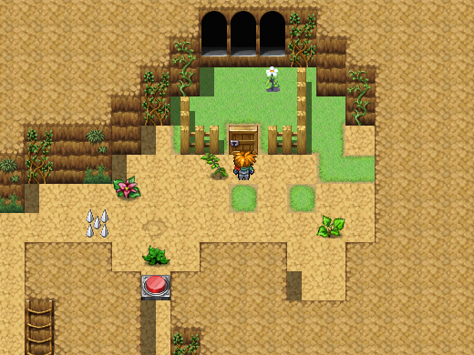
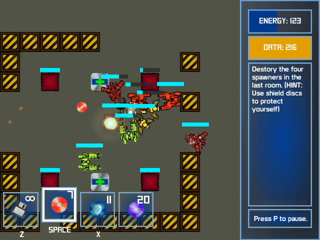
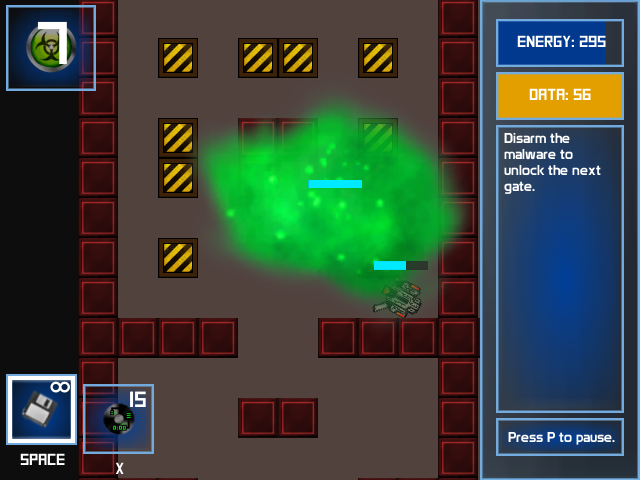
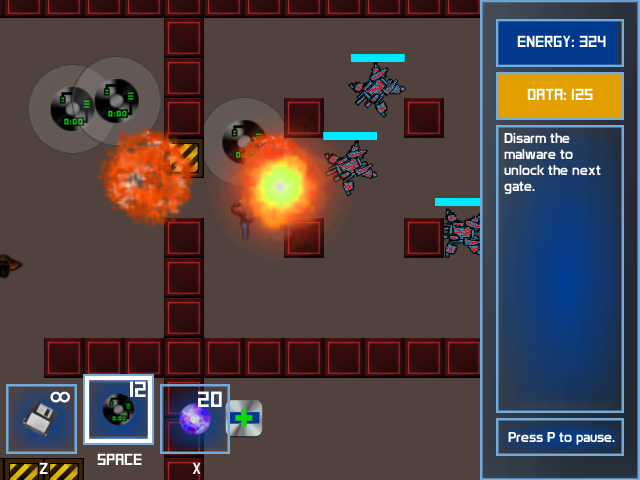

Home
Follow a student's journey through the smoke and mirrors of game development!
(actually, Unity makes it fairly straightforward). But seriously,
I made this site to map my progress in computer
science and game dev. Read my blog, or look at the games
I've created. Some games are playable in browser (with the Unity Plugin and
a browser that supports NPAPI), while others are downloadable.





